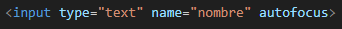

¿Para que sirve un campo de entrada?
Un campo de entrada en HTML, definido con el elemento <input>, permite al usuario introducir datos en un formulario. Es uno de los elementos clave en los formularios HTML, ya que ofrece una variedad de tipos de entrada, como texto, contraseñas, correos electrónicos, archivos, etc. Dependiendo del valor del atributo type, los campos de entrada pueden adaptarse a diferentes necesidades.
type
Especifica el tipo de campo de entrada. Los tipos más comunes incluyen:
text: Campo de texto.
password: Campo para contraseñas (oculta el texto).
email: Campo para ingresar un correo electrónico (valida que tenga el formato correcto).
number: Campo para ingresar un número.
file: Campo para subir archivos.
checkbox: Casilla de verificación.
radio: Botón de opción.
submit: Botón para enviar el formulario.
name
Asigna un nombre al campo de entrada, lo que permite identificar el dato en el servidor al enviarse el formulario.
value
Define un valor predeterminado para el campo de entrada. También puede ser usado para establecer el valor de un botón o casilla de verificación.
placeholder
Proporciona un texto en gris que aparece dentro del campo de entrada hasta que el usuario comience a escribir. Sirve como una pista sobre el tipo de dato que debe ingresar.
required
Indica que el campo es obligatorio y debe ser completado antes de enviar el formulario.
maxlenght
Especifica el número máximo de caracteres que el usuario puede ingresar en el campo.
min y max
Especifican los valores mínimos y máximos que se pueden ingresar en los campos de tipo number, date, range, etc.
step
Define el incremento que se debe seguir al usar un campo de tipo number o range. Por ejemplo, si step="2", los valores posibles serían 2, 4, 6, etc.
readonly
Indica que el campo de entrada no puede ser modificado por el usuario, pero aún puede ser enviado con el formulario.
disabled
Desactiva el campo de entrada, haciendo que el usuario no pueda interactuar con él y no se envíe al servidor al enviar el formulario.
pattern
Especifica una expresión regular que el valor del campo debe cumplir. Es útil para validar formatos de entrada específicos (como un número de teléfono o una placa de coche).
autocomplete
Indica si el navegador debe ofrecer sugerencias automáticas al usuario basadas en entradas anteriores. Los valores pueden ser on (habilitado) o off (deshabilitado).
autofocus
Coloca el cursor automáticamente en este campo de entrada cuando se carga la página, permitiendo al usuario empezar a escribir inmediatamente.
